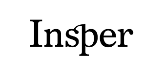

Olá, eu sou Patrick dos Santos, tenho 19 anos e sou estudante de engenharia mecânica do INSPER, eu gosto de várias coisas, dentre elas, as principais são jogar bola, pedalar, assistir séries e filmes, sair com meus amigos e aprender coisas novas todo dia. Sou bastante curioso, assim procuro conhecer tudo e todos ao meu redor. Gosto bastante do eu dia a dia, sempre procurando equilibrar minha vida acadêmica com o meu lazer. Curto muito estudar no INSPER, retribuo tudo o que recebo por ser Bolsista, assim, sempre dou o meu máximo e sempre procuro me destacar na faculdade. Estou sempre a procura de novos conhecimentos, assim o INSPER é um ótimo ambiente para realizar isso, sinto que todo dia aprend coisa nova e importante. Praticamente esse é um resumo sobre mim, qualquer é só ler o texto ao lado. :)